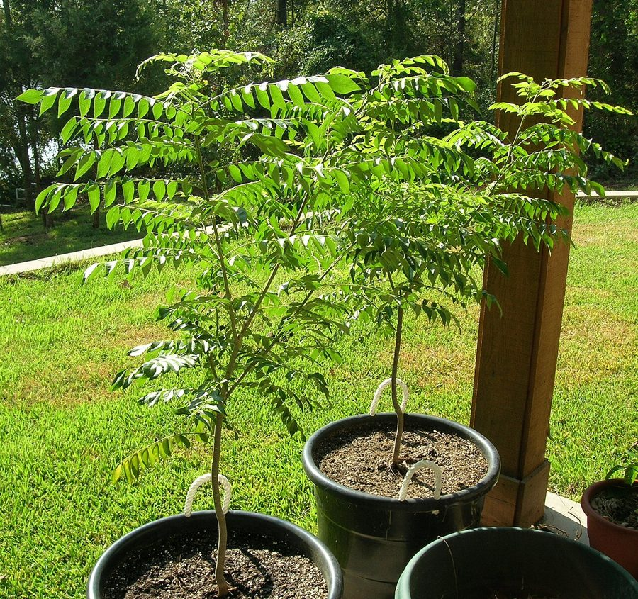

मीठा नीमCurry Leaf
Murraya koenigii · Rutaceae · FLR-0288

- Scientific name वैज्ञानिक नाम
- Murraya koenigii (L.) Spreng.
- Family कुल
- Rutaceae
- Hindi हिंदी
- मीठा नीम
- Local names स्थानीय नाम
- meetha neem, mitha neem, kadi patta, curry patta, curry leaf
- Status here यहाँ की स्थिति
- cultivated
- Movement आवागमन
- Resident, here all year
- Known from कहाँ दर्ज
- Others have published records from the Basti–Ayodhya districts बस्ती–अयोध्या के ज़िलों से दूसरों के प्रकाशित अभिलेख
- IUCN IUCN
- not evaluated
- Review समीक्षा
- audited and independently read
When to look कब देखें
Present all year. साल भर मौजूद।
Uses and possibilities उपयोग और संभावनाएँ
“Traditional medicine” means a documented traditional use, not a claim that it works. Nothing on this page is medical advice.
Drawn from the documented uses in the profile below, where each is labelled traditional, current or a research lead. All uses →
Tell it apart from इनसे अलग पहचानें
मीठा नीम / Curry Leaf
Murraya koenigii (L.) Spreng. — Rutaceae
मीठा नीम — एक सदाबहार झाड़ी जिसकी सुगंधित पत्तियाँ खाने में काम आती हैं। पत्तियाँ नीम जैसी दिखती हैं पर सुगंध और स्वाद बिल्कुल अलग होती है। इसका तेल सुगंधित होता है। छोटे सफेद फूल आते हैं जिनमें से काली चमकदार गोल बेरियाँ बनती हैं। हर गाँव के बाग़ में और घर के आँगन में यह झाड़ी लगाई जाती है। पत्तियाँ रसोई में खूब काम आती हैं।
Quick Identification त्वरित पहचान
| Feature | Description |
|---|---|
| Form | Evergreen shrub, 1.5–4 m tall, densely branched, compact crown |
| Leaves | Alternate, pinnate, 15–30 cm, with 9–19 small, lanceolate leaflets; fragrant when crushed |
| Leaflets | 2–5 cm long, sessile or short-petiolate, glossy, entire margins |
| Flowers | Small, white, fragrant, 5-petaled, in terminal racemes |
| Fruit | Small berry, 1–1.5 cm, glossy black when ripe, one-seeded |
| Bark | Smooth, pale gray-brown on young stems; dark and rough on older wood |
Field tip: A compact evergreen shrub with finely divided, fragrant pinnate leaves and small white flowers. The leaves have a distinctive strong aroma and mild bitter taste. Black berries ripen in autumn. Planted in homestead gardens and temple grounds.
हिंदी — कैसे पहचानें: सदाबहार झाड़ी, छोटी पत्तियाँ, नीम जैसी दिखें पर सुगंधित। छोटे सफेद फूल, काली चमकदार गोलियाँ।
Morphology आकारिकी
Biometrics (measurements for cultivated curry leaf in homestead gardens of northern India):
| Measurement | Range |
|---|---|
| Shrub height | 1.5–4 m |
| Stem diameter | 5–15 cm |
| Leaf length | 15–30 cm |
| Leaflet length | 2–5 cm |
| Flower diameter | 6–8 mm |
| Berry diameter | 1.0–1.5 cm |
Stems: Densely branched, smooth when young, becoming rough and dark with age. Wood is pale yellow, hard, but not durable in exposed conditions.
Leaves: Alternate, even-pinnate, with prominent petioles. Leaflets are opposite or nearly so, lanceolate, glossy green above, lighter beneath. The midrib is prominent. The entire leaf has a distinctive spicy, slightly bitter aroma.
Flowers: Regular, small, white, fragrant, with five petals and stamens. Arranged in short terminal and axillary racemes. Pollinated by small bees and flies.
Fruit: A small, glossy black berry, ovoid, containing a single large seed with a clear endosperm and oily cotyledons.
हिंदी: पत्ती पंखनुमा, छोटी पत्तिकाएँ, चमकदार, सुगंधित। छोटे सफेद फूल, काली गोलियाँ।
Behaviour & Ecology व्यवहार और पारिस्थितिकी
An evergreen shrub or small tree native to India, wild in the sub-Himalayan foothills and the peninsula, and planted in home gardens across the country. Murraya koenigii is drought-tolerant once established and prefers well-drained soils. It flowers year-round with peaks in May–June, producing abundant fragrant blooms that attract bees and small insects. The berries are a food source for birds, particularly bulbuls and mynas, which disperse the seed into neighboring fields and waste areas. In cultivation, the shrub can live for many decades and often regenerates by self-seeding.
हिंदी: सूखे को सहता है। पूरे साल फूल आते हैं, बसंत में सबसे ज़्यादा। पक्षी बेरियाँ खाते हैं और बीज ले जाते हैं।
Life Cycle / Phenology जीवन चक्र
| Month / Season | Event |
|---|---|
| January–March | Growth flush; leaf expansion in spring |
| May–June | Heavy flowering; fragrant white flowers |
| June–August | Young fruit development; fruit swelling |
| September–December | Fruit ripening to glossy black; seed maturation |
| Year-round | Some flowers and fruit present throughout the year in tropical areas |
Fruiting is heaviest from September to November. A mature shrub produces abundant seed.
हिंदी: मई-जून में फूल, सितंबर-दिसंबर में काली बेरियाँ। साल भर पत्तियाँ तोड़ी जा सकती हैं।
Associated Species / Interactions संबंधित प्रजातियाँ
- Flowering visitors: Asian Honey Bee and other small bees visit the flowers.
- Fruit dispersers: Red-vented Bulbul, Common Myna, and other fruit-eating birds consume the berries.
- Garden companion: Often planted near Holy Basil (holy basil), lemon, and Guava in homestead gardens.
- Adjacent species: Found alongside Neem, Pomelo, and Mango in older village groves.
Pests and Diseases कीट और रोग
- Scale insects: Rarely, hemipterous scale insects infest the stems; neem oil spray provides control.
- Leaf spots: Fungal spots are occasional in humid conditions; leaf fall is usually minimal.
- Root-knot nematodes: In heavy clay soils, root-knot nematodes may slow plant growth; raised beds or well-drained soil prevents damage.
- Generally healthy: Curry leaf is a hardy, low-maintenance plant in most environments.
Agricultural / Human Relevance कृषि प्रासंगिकता
Culinary use: The leaves are used fresh to flavor vegetable curries, lentil dishes (dal), and rice preparations. The leaves impart a mild spicy, slightly bitter, distinctive flavor. They are added at the beginning of cooking (tempering) in hot oil or ghee and are either removed before eating or left in the dish. Fresh leaves are preferred; dried leaves lose flavor.
Traditional medicine: The leaves are listed in Ayurvedic and folk medicinal texts as a digestive aid and for treating dysentery. A decoction is used for fever. The fruit is eaten in small quantities as a tonic; the seed is rich in oil.
Oil: The essential oil of curry leaf is used in perfumery and cosmetics, marketed as "curry leaf oil" or "kadi patta oil."
Propagation: The plant is easily propagated from seed (though seeds lose viability quickly) or from cuttings. It is sold in nurseries as an ornamental and culinary shrub.
हिंदी: पत्तियों से सब्जी का स्वाद बढ़ता है। पारंपरिक दवा में भी आता है। आसानी से बढ़ता है, कटिंग से भी लग जाता है।
Expected Locally स्थानीय रूप से अपेक्षित
Not a field record. Written from published accounts for eastern Uttar Pradesh. No confirmed local sighting yet — if you have seen it, that is what the atlas needs.
अभी तक स्थानीय पुष्टि नहीं। यह विवरण प्रकाशित स्रोतों से है, किसी अवलोकन से नहीं।
Curry leaf is to be expected as a cultivated shrub in homestead gardens and kitchen gardens throughout Basti district. GBIF holds published records from the core districts. The plant is grown for its fragrant leaves and may occasionally be found spreading from old gardens into village waste areas.
Distribution वितरण
Global range: Native to India and neighbouring South Asia; planted throughout India and in tropical regions elsewhere.
In India: Cultivated in all vegetable-growing regions, from coastal areas to the plains and foothills.
In Uttar Pradesh: Increasingly common in homestead gardens in eastern and central UP in recent decades.
In Basti district / eastern UP: Present in homestead gardens; records from core districts, mainly from cultivated areas.
Research Questions शोध प्रश्न
Anyone can investigate these | कोई भी इन प्रश्नों की जाँच कर सकता है
- How many leaves can a curry leaf shrub produce in one year, and how long does each leaf remain edible? / एक पौधा एक साल में कितनी पत्तियाँ देता है? — Mark a branch; count and harvest leaves monthly.
- Do curry leaf berries have the same flavor as the leaves, and do they have culinary uses? — Taste the fruits; ask elderly cooks about traditional uses.
- Which birds eat the ripening berries, and do they help or hinder the spread of the plant? — Observe fruiting plants; identify birds.
- Can curry leaf grow from cuttings without rooting hormone, and what is the success rate? / क्या कली के बिना पौधे को कटिंग से उगाया जा सकता है? — Take cuttings; plant in soil; count successful rooting.
- Does the flavor of curry leaf leaves change with season, and is there a best month to harvest for cooking? — Taste leaves from different months; compare flavor intensity.
Similar Species मिलती-जुलती प्रजातियाँ
| Species | How to tell apart | हिंदी |
|---|---|---|
| Neem (Azadirachta indica) | Larger leaflets with toothed margins; bitter taste; yellow flowers; taller tree | नीम — पत्तियाँ कटी-फटी, बहुत कड़वी; पीले फूल |
| lemon (Citrus limon) | Thorns on stems; leaves wider, not pinnate; larger white flowers; yellow fruit | नींबू — काँटे, चौड़ी पत्तियाँ, बड़े फूल, पीली गोली |
| Toddalia aculeata (Prickly Ash) | Thorny stems; rough texture; leaves thicker; fruit red, not black | कांटेदार, लाल गोली |
Field rule: A compact evergreen shrub with finely pinnate, fragrant leaves, small white flowers, and glossy black berries. Leaves smell spicy when crushed. Grown in homestead gardens.
Taxonomy & Classification वर्गीकरण
Original description. Originally described by Carl Linnaeus as Bergera koenigii in 1771. Later transferred to the genus Murraya (now Murrayae) by Sprengel in 1825. The genus is named after Johann Andrew Murray, an 18th-century Swedish botanist. The specific epithet koenigii honors Johann Gerhard König, a naturalist in India.
Subspecies. Monotypic — no subspecies are currently recognised.
Family and order placement. Rutaceae (the citrus family), order Sapindales. Related to lime, lemon, and other citrus species, but distinct in leaf structure and fruit form.
Phylogenetic notes. Murraya koenigii is distinct from other Murraya species in the genus. Molecular evidence places it as a basal member of the Rutaceae.
IUCN status rationale. Not evaluated. Widespread in cultivation and in the wild across South Asia; no conservation concern.
Photo Gallery फोटो गैलरी
Photos needed आवश्यक फोटो
- [ ] Whole shrub in a homestead garden (पूरी झाड़ी)
- [ ] Close-up of fragrant white flowers (फूल)
- [ ] Ripening black berries on the branch (पकी बेरियाँ)
No photos yet — add field photos to media/species/curry_leaf/ and run node scripts/sync_photos.js.
References संदर्भ
- Linnaeus, C. (1771). Mantissa Plantarum. Stockholm.
- Sprengel, K. (1825). Systema Vegetabilium, 4th ed. Göttingen.
- Hooker, J.D. (1875). Flora of British India, Vol. 1. L. Reeve & Co., London.
- Kirtikar, K.R. & Basu, B.D. (1935). Indian Medicinal Plants, 2nd ed., Vol. 2. Lalit Mohan Basu, Allahabad.
- Botanical Survey of India (2013). State Flora Series: Flora of Uttar Pradesh. BSI, Kolkata.
- GBIF Occurrence Data — Murraya koenigii, India (2020–2026).
Source file: species/flora/trees/curry_leaf.md